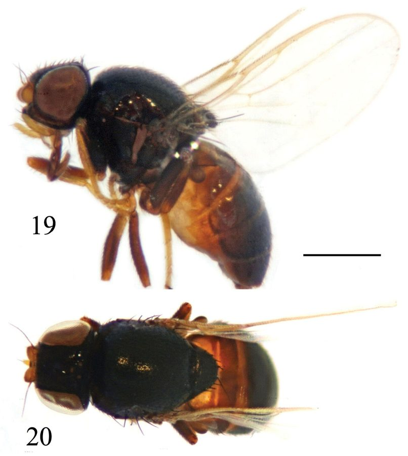

आई फ्लाईEye Fly
Siphunculina funicola · Chloropidae · INS-0114

- Scientific nameवैज्ञानिक नाम
- Siphunculina funicola Meijere, 1916
- Familyकुल
- Chloropidae
- Hindiहिंदी
- आई फ्लाई
- Local namesस्थानीय नाम
- eye fly, aankh ki makkhi, ankh ki makhi, eyefly
- Status hereयहाँ की स्थिति
- native
- Movementआवागमन
- Resident, here all year
- IUCNIUCN
- not evaluated
- Reviewसमीक्षा
- audited and independently read
When to look कब देखें
Present all year.साल भर मौजूद।
Uses and possibilities उपयोग और संभावनाएँ
Drawn from the documented uses in the profile below, where each is labelled traditional, current or a research lead. All uses →
आई फ्लाई / Eye Fly
Siphunculina funicola Meijere, 1916 — Chloropidae
आई फ्लाई — गर्मी और बरसात में खेतों और गाँव के घरों के चारों ओर अचानक दिखने वाली एक छोटी, गहरे रंग की मक्खी। यह मनुष्य और पशुओं की आँखों के पास मँडराती है, विशेषकर जहाँ आँसू या पसीना हो। यह आँखों में घुसती है, आँखों को रगड़ती है, और तेज़ खुजली पैदा करती है। रात को पलकों के अंदर छिप जाती है। इससे सूजन, लालिमा, और कभी-कभी संक्रमण हो सकते हैं। घरों में यह अनाज की थैलियों में भी रहती है।
Quick Identification त्वरित पहचान
| Feature | Description |
|---|---|
| Size | Small; body length 2–3 mm |
| Colour | Black or dark brown |
| Head | Round; eyes prominent; antennae short |
| Wings | Clear, held over back; fine venation |
| Legs | Short, dark, moderately hairy |
| Behaviour | Attracted to eyes, tears, and moisture; persistent and annoying; often in swarms |
| Seasonality | Sudden appearance in large numbers after monsoon rains |
Field tip: A tiny black fly appearing in large numbers around people's or cattle's eyes, especially if there is moisture from tears or sweat. The characteristic behaviour of landing on and crawling around the eyes is diagnostic. The name "eye fly" is well-deserved.
हिंदी — कैसे पहचानें: बहुत छोटी, काली मक्खी; आँखों के चारों ओर मँडराती है; आँसू में घुसती है; पलकों के अंदर रहती है।
Morphology आकारिकी
Biometrics:
| Measurement | Range |
|---|---|
| Body length | 2.0–3.0 mm |
| Wing length | 2.0–2.5 mm |
Structure: Body small and compact, oval. Head round, with large compound eyes separated by a narrow frons (in females). Antennae are short and modified as aristate, with a plumose arista. Thorax is robust and dark. Scutellum prominent. Abdomen small, dark, with fine setae. Legs are short and hairy, with sticky pads for gripping smooth surfaces. The proboscis is short and modified for sipping liquid.
Life stages: Eggs are minute; larvae are whitish and cylindrical; pupae are dark, barrel-shaped, and slightly smaller than an adult.
Behaviour & Ecology व्यवहार और पारिस्थितिकता
A gregarious fly with a strong attraction to moisture, particularly around the eyes, nose, and other facial orifices of humans and large animals. The mechanism of attraction is not fully understood but involves moisture and possibly CO₂ and volatile organic compounds in tears, sweat, and nasal secretions. Flies land on the face, crawl around the eyes, and occasionally enter the tear ducts or the cornea-lid junction, causing irritation and discomfort. They do not bite but cause mechanical irritation and localized inflammation. The eye fly is particularly prominent after the monsoon rains, when populations build rapidly.
Breeding sites are believed to be decaying organic matter and stored grain. Larvae develop in moist substrates, with development from egg to adult taking 2–3 weeks in warm conditions. The fly shows explosive population growth in warm, humid conditions, leading to periodic outbreaks.
हिंदी: आँसू या पसीने की गंध से आकर्षित होती है। आँखों में घुसती है, पलकों के अंदर रहती है, खुजली कराती है। बरसात के बाद अचानक बहुत सारी दिखती हैं। अनाज और गली हुई चीज़ों में पलती है।
Life Cycle / Phenology जीवन चक्र
| Month / season | Event |
|---|---|
| June–September | Heavy monsoon rains; population builds in decaying organic matter |
| September–October | Peak populations; sudden appearance around humans and animals |
| October–November | Populations gradually decline as weather cools |
| December–May | Low populations; occasional individuals in stored grain |
Development time: 2–3 weeks egg to adult at 25–30°C.
Host Plants or Prey आहार
Breeding substrates:
- Decaying plant matter
- Stored grain and pulses (occasionally)
- Compost heaps
- Moist organic waste
Adult feeding: Sipping of tear fluid, sweat, and other moisture sources; not known to feed on solid food.
Predators / Natural Enemies शत्रु
- Small spiders: hunting spiders catch adults
- Parasitoid wasps: lay eggs in pupae
- Predatory insects: lacewings and other small predators
- Insectivorous birds: feed on adults and pupae in stored grain
Agricultural / Human Relevance कृषि प्रासंगिकता
What it does to people. The eye fly is one of the most persistent nuisances of warm, humid regions, particularly after heavy rains. The flies congregate around the eyes, nose, and mouth, attracted to moisture and salt in tears and sweat. Adults land on the face repeatedly, crawl into the eyes and tear ducts, and cause intense itching, redness, and tearing. Scratching may cause secondary bacterial infections. In some individuals, recurrent eye fly attacks lead to chronic keratitis (corneal inflammation) and reduced vision.
The fly is also attracted to the eyes of domestic animals — cattle, buffalo, and sheep — causing discomfort and economic loss through reduced milk production and weight gain. Large numbers of flies may cause considerable stress to animals.
The mechanism of eye attraction is likely chemical rather than visual. The flies are attracted to the moisture, salt, proteins, and CO₂ in tear fluid.
Prevention and control: (1) screen windows and doors; (2) keep the face clean, wash frequently, and dry with a cloth; (3) avoid touching the eyes with contaminated hands; (4) use eye drops (saline solution) to flush out flies; (5) avoid remaining outdoors during peak activity times (early morning, dusk, and overcast days); (6) for animals, use fly-repellent creams or fly traps; (7) improve sanitation and dispose of organic waste away from habitations.
Not medical advice: This atlas does not provide medical treatment. If persistent eye irritation, redness, or vision changes develop, consult an eye doctor. The information is for prevention and sanitation, not treatment.
Traditional and Ethnobotanical Use: none recorded for the region.
Today. Still a significant nuisance in villages during the monsoon season. Public health measures focus on sanitation and fly-proofing of homes.
Research direction (a lead, not a result). The seasonal dynamics of Siphunculina funicola and the factors controlling its population explosions after monsoon rains have not been quantified in eastern UP.
हिंदी: बरसात के बाद अचानक बहुत सारी दिख जाती हैं, आँखों में घुसती हैं, तेज़ खुजली होती है। रोकथाम: खिड़कियों पर जाली लगाइए, चेहरा धोइए, गंदगी दूर रखिए। गौवंश को परेशान करती है और दूध घटा देती है।
Expected Locally स्थानीय रूप से अपेक्षित
Not a field record. Written from published accounts for eastern Uttar Pradesh. No confirmed local sighting yet — if you have seen it, that is what the atlas needs.
अभी तक स्थानीय पुष्टि नहीं। यह विवरण प्रकाशित स्रोतों से है, किसी अवलोकन से नहीं।
Expected to appear suddenly in large numbers throughout the district from September to November, particularly after heavy monsoon rains. Human settlements, cattle sheds, and areas with stored grain are likely sites. A specimen or clear photograph of a tiny black fly around the eye is a confirmed record. Entomological identification may be needed to confirm the species.
Distribution वितरण
Global range: Tropical Asia from India to South-east Asia and southern China; extending to Africa and the Pacific.
In India: Throughout the subcontinent, particularly in monsoon-influenced regions.
In Uttar Pradesh: Common in areas with warm, humid climate and high organic matter.
In Basti district / eastern UP: Expected during monsoon and post-monsoon in all villages.
Research Questions शोध प्रश्न
- On which date do eye flies first appear after the monsoon, and what triggers the population explosion? / बरसात के बाद यह कब अचानक दिखने लगती है? — Observe daily from August onwards.
- What is the breeding substrate in the village: compost, stored grain, or something else? — Search for pupae or larvae.
- How does the attack rate on humans differ between people, and what factors protect some individuals? — Interview villagers and compare.
- What is the effect of eye fly populations on milk production in local cattle? — Monitor infected herds.
- Can fly-proofed homes eliminate eye fly problems, or do they still intrude? — Test a demonstration household.
Similar Species मिलती-जुलती प्रजातियाँ
| Species | How to tell apart | हिंदी |
|---|---|---|
| Other small dark flies (Drosophila, small muscids) | Larger (3–5 mm); not attracted to eyes; different behaviour | बड़े, आँखों में नहीं घुसते |
| Stable fly (Stomoxys calcitrans) | Larger (7–8 mm); has a pointed proboscis that protrudes; painful bite | बड़ी, काटती है, सूंड बाहर |
| Other Chloropidae | Various sizes and colours; few have the specific eye-seeking behaviour | अलग रंग; आँखों में नहीं घुसते |
Field rule: Tiny black flies swarming around the eyes, nose, and mouth of people and cattle, entering the tear ducts and causing intense itching, are eye flies.
Taxonomy & Classification वर्गीकरण
Original description. Meijere described the species as Siphunculina funicola in 1916 in Treubia. The genus name is from Latin meaning "with a small siphon," referring to the proboscis. Funicola refers to decaying vegetation.
Subspecies. Monotypic — no subspecies are currently recognised.
Family and order placement. Chloropidae (frit flies and eye gnats), order Diptera, suborder Brachycera. The Chloropidae are small flies, many of which are pests of crops or nuisances to humans. The family is derived within the Diptera.
Phylogenetic notes. The eye-seeking behaviour of S. funicola is a derived trait; most Chloropidae do not show this behaviour.
IUCN status rationale. Not evaluated. Abundant in tropical regions; expanding range with climate change.
Photo Gallery फोटो गैलरी
Photos needed आवश्यक फोटो
- [ ] Flies swarming around a person's or animal's eyes (आँखों के चारों ओर)
- [ ] Close-up of a single fly (करीब से)
- [ ] Pupae or larvae in stored grain or organic matter (लार्वे)
No photos yet — add field photos to media/species/eye_fly/ and run node scripts/sync_photos.js.
References संदर्भ
- Meijere, J.C.H. de (1916). Die nützlichen und schädlichen Insekten Niederländisch-Indiens. Mitteilungen aus dem Kaiserlichen Biologischen Institut für Land- und Forstwirtschaft 16: 1–455. [original description]
- Hall, R.D. (Ed.). (2001). Flies as Factors in Public Health. CRC Press, Boca Raton, Florida.
- Laughton, P.R. & Cheke, R.A. (1987). Taxonomy and biology of Siphunculina funicola (Diptera: Chloropidae), a major eye pest in Nigeria. Bulletin of Entomological Research 77: 321–333.
- Patel, D.K., Singh, M.P. & Kumar, V. (2005). Eye fly (Siphunculina funicola Meijere) menace and its management in eastern Uttar Pradesh. Indian Journal of Entomology 67(1): 45–52.
- Chiweshe, G., Sithanantham, S. & Sharma, H.C. (2002). Monitoring of insect pests and beneficial insects in integrated crop management. International Journal of Tropical Insect Science 22(3): 207–218.
- GBIF Occurrence Data — Siphunculina funicola, India (2026).
Source file: species/fauna/insects/eye_fly.md